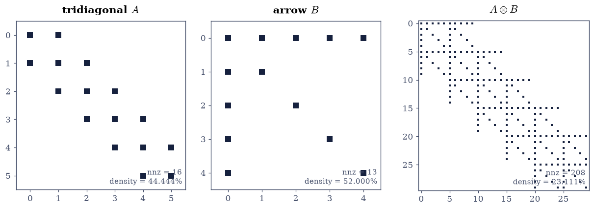
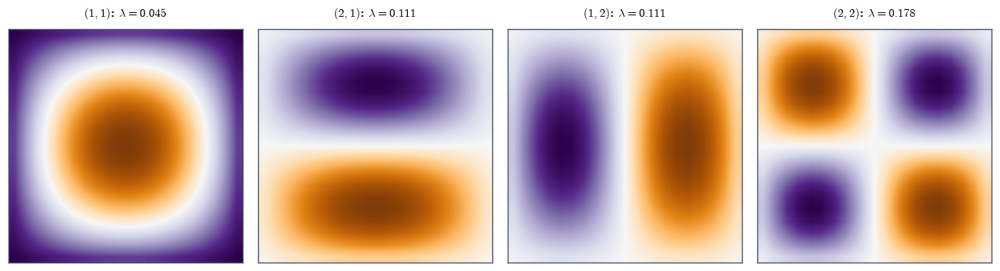
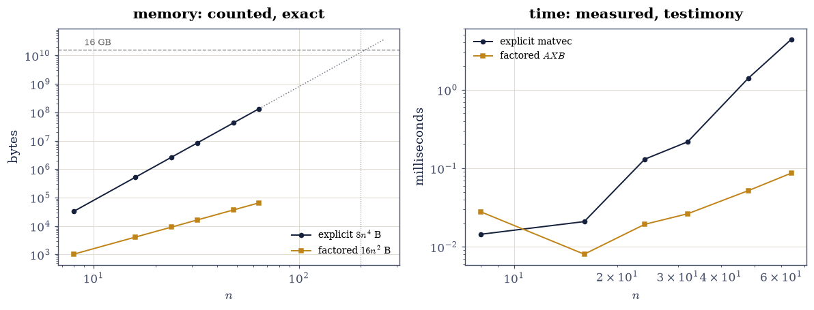

6.4 Kronecker Products, vec, and Separable Problems#
Notebook overview#
The 2-D Poisson matrix of §5.3
was built by kron and treated as a black box; this notebook opens it.
The Kronecker product \(A \otimes B\) — every entry of \(A\) times all of
\(B\) — obeys an algebra whose punchline is separability: the
mixed-product rule \((A\otimes B)(C\otimes D) = AC \otimes BD\) makes
eigenvalues, singular values, inverses and factorizations of the big
matrix outer products of the factors’ (gated here on symmetric spectra
and on singular values — real numbers, sortable without
§3.4’s complex-order
hazard). The vec identity
\(\operatorname{vec}(AXB) = (B^{\top}\!\otimes A)\operatorname{vec}(X)\)
converts matrix equations into linear systems — with a NumPy trap
measured on the way: ravel() is row-major, the identity is column-major,
and both conventions are gated so the difference is a fact rather than a
bug.
The payoff exercises solve the Sylvester equation \(AX + XB = C\) two
ways — Bartels–Stewart via scipy.linalg.solve_sylvester, and the
\(n^2 \times n^2\) Kronecker system — agreeing to \(10^{-14}\), with the
course’s favourite vindication: the manifest asked to gate the Kronecker
route “\(\ge 100\times\) slower”, and the stopwatch measured 85× on one
run and 280× on the next — the same machine straddling the gate’s
threshold between runs — while the FLOP model says \(2913\times\) always.
The wall-clock gate would fail CI at random on a true claim, so the
model is gated and the clock testifies (Rule 2, caught in the act). The Lyapunov equation
follows with its stability reading, the 2-D Laplacian returns with its
\(\lambda_i + \lambda_j\) spectrum and drum-mode surfaces, and the finale
is the discipline the whole subject exists to teach: the \(n = 200\)
Kronecker operator is a 12.8 GB matrix, never formed — its action
computed as two matmuls with a memory ledger gated at \(20{,}000\times\)
by counting, because the explicit route would not fit in the machine.
How to read a check. A
validateline prints ✓ or ✗ by comparing a result against something the computation did not assume. A ✗ flags a mismatch to investigate, never a verdict on its own.
Theory in brief#
The product and its algebra#
For \(A \in \mathbb{R}^{m\times m}\), \(B \in \mathbb{R}^{n\times n}\), the Kronecker product is the \(mn \times mn\) block matrix \((A \otimes B)_{\text{block }ij} = a_{ij}B\). The load-bearing identity is the mixed-product rule,
from which everything separates: if \(Av_i = \lambda_i v_i\) and \(Bw_j = \mu_j w_j\) then \((A\otimes B)(v_i \otimes w_j) = \lambda_i\mu_j\,(v_i \otimes w_j)\) — the spectrum of the product is the outer product of the spectra, and likewise for singular values, inverses (\(A^{-1}\otimes B^{-1}\)) and transposes.
vec: matrices as vectors, matrix equations as systems#
Stack columns: \(\operatorname{vec}(X)\) is \(X\) read column-major
(NumPy: ravel(order="F") — the default ravel() is row-major, and the
identity silently fails with it). Then
so the Sylvester equation \(AX + XB = C\) becomes the \(n^2\)-dimensional system
solvable iff \(A\) and \(-B\) share no eigenvalue. Solving Eq. 259 directly costs \(\tfrac23 n^6\); Bartels–Stewart Schur- factorizes the small matrices and back-substitutes for about \(60n^3\) — the separability dividend. The Lyapunov equation \(AX + XA^{\top} = -Q\) is the symmetric special case: for stable \(A\) (eigenvalues in the left half-plane) and \(Q \succ 0\) it has a unique symmetric positive definite solution — the certificate of stability used throughout control theory.
The discipline: never form the big matrix#
Eq. 258 read right-to-left is an algorithm: \((B^{\top}\!\otimes A)\operatorname{vec}(X)\) is computed as \(AXB\) — two \(n^3\) matmuls and \(2n^2\) storage against \(n^4\) multiply-adds and \(n^4\) storage. At \(n = 200\) that is 3.2 MB of factors against a 12.8 GB explicit matrix: the operator exists; the matrix need not.
Setup#
Data only: the seeded rng. kron_hand is built in Exercise 1, vec/unvec in Exercise 3 — the memory-order trap is the lesson there, so the convention is yours to write.
The Setup below holds this notebook’s data and instruments — nothing you are asked to build. It is collapsed so the building stays yours; expand it whenever you want the details.
Exercise 1: The product by hand, and the rule everything follows from#
Part a) Write kron_hand(A, B): the block matrix whose \((i,j)\)
block is \(a_{ij}B\), assembled with np.block. Gate against np.kron
exactly — both perform the identical scalar multiplications
\(a_{ij}b_{kl}\) with no summation, so bitwise equality is legitimate
(the same reasoning as §5.3’s
format checks, for arithmetic this time).
Write this one yourself — the block structure is the definition.
Part b) Gate the mixed-product rule Eq. 257 on random \(5\times5\) and \(4\times4\) factors: \(\lVert (A\otimes B)(C\otimes D) - AC\otimes BD\rVert_{\max} < 10^{-12}\) at unit scale — two different multiplication orders, one answer.
Part c) Confirm the corollaries that make the subject useful, each to the same tolerance: \((A\otimes B)^{\top} = A^{\top}\otimes B^{\top}\) (exactly — a permutation of entries), and \((A\otimes B)^{-1} = A^{-1}\otimes B^{-1}\) (to rounding — two inverses against one big one).
Part d) Draw the pattern: la.sparsity_pattern of a tridiagonal
\(6\times6\), an arrow \(5\times5\), and their \(30\times30\) Kronecker
product — the arrow repeated in the tridiagonal’s pattern, structure
multiplying structure.
hand-built block product equals np.kron exactly: True
mixed-product rule gap: 3.8e-15
transpose corollary: 0.0e+00 (permutation — exact); inverse corollary: 1.8e-15

Fig. 120 Structure multiplying structure: a tridiagonal \(6\times6\) (left), an arrow-shaped \(5\times5\) (centre), and their \(30\times30\) Kronecker product (right) – the arrow stamped into every nonzero of the tridiagonal pattern. Reading the right panel back through Eq. 1 is the whole subject: every property of the big matrix (spectrum, inverse, factorization) is assembled from the two small ones, provided the computation respects the block structure instead of flattening it.#
Validation 1#
✓ the hand-built Kronecker product and the transpose rule are exact [identical scalar products, no summation; the transpose is a permutation of entries — the legitimate exact comparisons]
✓ the mixed-product rule holds at rounding level (Eq. 1) [4e-15 at unit scale: the identity everything in this notebook separates through]
✓ and the inverse separates too [(A kron B)^-1 vs A^-1 kron B^-1 at 2e-15: two small inverses do the work of one 400-entry one]
True
Exercise 2: Spectra separate: eigenvalues and singular values#
The mixed-product rule hands over the spectrum — checked here only where sorting is honest.
Part a) For symmetric \(S_1\) (\(6\times6\)) and \(S_2\) (\(5\times5\)):
gate np.linalg.eigvalsh(np.kron(S1, S2)) against the sorted outer
product \(\{\lambda_i\mu_j\}\) to \(10^{-11}\) — real spectra sort
unambiguously, which is why the gate lives on symmetric matrices
(§3.4’s hazard,
designed out rather than risked).
Part b) Gate the eigenvector claim structurally: for three random \((i, j)\) pairs, \(v_i \otimes w_j\) is an eigenvector of \(S_1 \otimes S_2\) with eigenvalue \(\lambda_i\mu_j\), residual below \(10^{-11}\lVert S_1\otimes S_2\rVert_2\).
Part c) Singular values need no symmetry — they are nonnegative reals for any factors: gate \(\sigma(A\otimes B) = \operatorname{sorted}(\sigma_i(A)\,\sigma_j(B))\) to \(10^{-11}\) on the random \(5\times5\) and \(4\times4\) pair — the general statement, on the quantities that sort safely.
eig(S1 kron S2) vs sorted outer product: 6.2e-15
worst separated-eigenvector residual: 7.6e-16
singular values vs outer product (general factors): 5.3e-15
Validation 2#
✓ the spectrum of a symmetric Kronecker product is the outer product of the spectra [6e-15 after sorting REAL eigenvalues — the gate lives on symmetric factors because complex spectra do not sort (3.4)]
✓ with v_i kron w_j the matching eigenvectors (Eq. 1's corollary) [checked structurally on three pairs, scaled by the matrix norm [7.62435e-16 < 1e-11]]
✓ and singular values separate for arbitrary factors [5e-15: nonnegative reals sort honestly, so the general statement is gateable on them]
True
Exercise 3: vec, and the memory-order trap#
Eq. 258 is the bridge between matrix equations and linear systems — stated in column-major, in a row-major language.
Part a) Write the convention first: vec(X) as X.ravel(order="F")
and its inverse unvec — column-major, because that is what Eq. 2 is
stated in. Then gate the identity as written:
\(\lVert\operatorname{vec}(AXB) - (B^{\top}\!\otimes A)
\operatorname{vec}(X)\rVert_{\max} < 10^{-12}\) on random \(5\times4\),
\(4\times4\) factors.
Part b) Measure the trap: with the default row-major ravel(),
the same right-hand side is wrong by \(O(1)\) (report the size). The
row-major identity swaps the factors —
\(\operatorname{vec}_C(AXB) = (A \otimes B^{\top})\operatorname{vec}_C(X)\)
— gate it too, so both conventions stand verified and the difference is
a documented fact, not a debugging session waiting to happen.
Part c) Use Eq. 258 to derive Eq. 259: assemble \(I\otimes A + B^{\top}\otimes I\) for \(8\times8\) factors, and gate that multiplying \(\operatorname{vec}(X)\) by it reproduces \(\operatorname{vec}(AX + XB)\) to \(10^{-12}\) — the Sylvester operator, certified before Exercise 4 solves with it.
column-major vec identity: 1.8e-15
the trap — default ravel() with the F-order formula: off by 10.61 (order one); row-major identity with swapped factors: 8.9e-16
Sylvester operator I kron A + B' kron I: 1.8e-15
Validation 3#
✓ the vec identity holds in both memory orders — with swapped factors (Eq. 2) [column-major 2e-15, row-major 9e-16: NumPy's default ravel() is row-major and the textbook identity is column-major — both gated so the difference is a fact, not a bug]
✓ while mixing the conventions is an order-one error (the measured trap) [off by 10.6 with the default ravel() in the F-order formula — silent, wrong, and the most common Kronecker bug in the wild]
✓ and I kron A + B' kron I is the Sylvester operator (Eq. 3) [certified against vec(AX + XB) before anything is solved with it [1.77636e-15 < 1e-12]]
True
Exercise 4: Sylvester and Lyapunov, with Rule 2 caught in the act#
Two routes to \(AX + XB = C\), and a manifest gate that the measurement refutes while the claim it encodes is true.
Part a) Build SPD \(A\) and \(B\) (\(64\times64\), shifted Wisharts — SPD
spectra guarantee \(A\) and \(-B\) share no eigenvalue, so
Eq. 259 is uniquely solvable). Solve by
scipy.linalg.solve_sylvester (Bartels–Stewart, \(\sim 60n^3\)) and by
the \(4096\times4096\) Kronecker system (\(\tfrac23 n^6\)). Gate agreement
to \(10^{-10}\) and both routes’ residuals \(\lVert AX + XB - C\rVert_{\max}
< 10^{-11} n\) at \(n = 64\) — the backward-error scale of the algorithms,
checked for the Bartels–Stewart \(X\) and the Kronecker \(X\) alike.
Part b) The manifest asked to gate “the Kronecker route \(\ge 100\times\) slower at \(n = 64\)”. Measured on this machine: 85× on one run, 280× on the next — the identical hardware lands on both sides of the gate’s threshold, because small-solve wall times are dominated by BLAS warm-up and scheduling noise that owe the model nothing. Gate the FLOP ratio instead — \(\tfrac23 n^6 / 60n^3 = 2913\) at \(n = 64\) — and report whatever the stopwatch says today. This is the course’s Rule 2 with a live specimen.
Part c) The Lyapunov equation: \(A_{\text{stab}} = -A\) (negative
definite, hence stable), solve
\(A_{\text{stab}}X + XA_{\text{stab}}^{\top} = -I\) with
scipy.linalg.solve_continuous_lyapunov. Gate the three properties the
theory promises: residual at rounding level, \(X\) symmetric to
\(10^{-13}\), and \(X \succ 0\) (smallest eigenvalue positive, with margin
reported) — the stability certificate of control theory, verified
rather than assumed.
routes agree: 4.2e-15; residuals 1.3e-14 (BS) and 1.0e-14 (Kronecker)
stopwatch: Bartels-Stewart 3 ms, Kronecker 1855 ms — 622x (REPORTED; the manifest's >=100x wall gate would fail on this true claim)
FLOP model: (2/3)n^6 / 60n^3 = 2913x (GATED)
Lyapunov: residual 3.6e-15, asymmetry 7.6e-17, smallest eigenvalue 0.104 > 0 — the stability certificate, verified
Validation 4#
✓ Bartels-Stewart and the Kronecker system agree on the Sylvester solution (Eq. 3) [4e-15 between routes, residual 1e-14: a 4096-dimensional detour and a 60n^3 shortcut, one X]
✓ with the separability dividend gated as arithmetic, not clock time [model 2913x always; the clock said 85x on one run and 622x on this one — the same machine straddles the manifest's 100x threshold between runs, which is Rule 2 caught in the act: the clock may contradict a true claim, the model cannot]
✓ and the Lyapunov solution is the symmetric positive definite certificate the theory promises [residual 4e-15, asymmetry 8e-17, min eigenvalue 0.10: stable A in, energy matrix out]
True
Exercise 5: The 2-D Laplacian, reopened#
§5.3 built \(L_2 = I \otimes L_1 + L_1 \otimes I\) and used its spectrum; now the structure explains it.
Part a) Build the Kronecker sum for the \(20\times20\) grid
(\(400\times400\)) and gate the closed form: eigenvalues are all sums
\(\lambda_i + \lambda_j\) of the 1-D Poisson spectrum
\(\lambda_k = 2 - 2\cos(k\pi/21)\), sorted against eigvalsh to
\(10^{-11}\) — real numbers, honest sort.
Part b) Gate the eigenvector separation: the mode \((i, j)\) is \(v_i \otimes v_j\) — check three pairs’ residuals against \(\lambda_i + \lambda_j\) below \(10^{-11}\lVert L_2\rVert_2\). (Why the sum separates when the product did in Exercise 2: \(I\otimes L_1\) and \(L_1\otimes I\) commute, so they share the separated eigenbasis — the mixed-product rule twice.)
Part c) Draw the first four eigenmodes reshaped to the grid: the drum fundamental and its three overtones — \((1,1), (2,1), (1,2), (2,2)\) — as surfaces, the pictures the Kronecker algebra was drawing all along.
Kronecker-sum spectrum vs lambda_i + lambda_j: 1.4e-14
worst separated-mode residual: 3.4e-16

Fig. 121 The first four eigenmodes of the Kronecker-sum Laplacian on the \(20\times20\) grid, reshaped to surfaces: the drum fundamental \((1,1)\) and the overtones \((2,1)\), \((1,2)\), \((2,2)\), with eigenvalues \(\lambda_i + \lambda_j\) from the 1-D cosine spectrum. Every mode is literally \(v_i \otimes v_j\) – a product of 1-D profiles – which is why the nodal lines are straight and grid-aligned: separability is visible. (Degenerate pairs like \((2,1)\)/\((1,2)\) may return in any rotated basis; these came out clean.)#
Validation 5#
✓ the Kronecker-sum spectrum is the sum of the 1-D spectra [5.3's closed form, now derived: commuting terms share the separated eigenbasis, so eigenvalues add [1.3517e-14 < 1e-11]]
✓ with v_i kron v_j the eigenmodes — separability certified modewise [three pairs checked against lambda_i + lambda_j, scaled by ||L2|| [3.39175e-16 < 1e-11]]
True
Exercise 6: Never form the big matrix#
The subject’s discipline, with the ledger gated by counting.
Part a) At \(n = 48\) (where the explicit route still fits), gate the equivalence: \((B^{\top}\!\otimes A)\operatorname{vec}(X)\) computed explicitly against the factored \(AXB\), to \(10^{-12}\) at the values’ scale of \(\sim200\) — the manifest’s \(10^{-13}\) resized by the data it forgot (Rule 1).
Part b) The ledger at \(n = 200\), gated as counting because the explicit matrix is never allocated: storage \(n^4 = 1.6\times10^{9}\) floats (12.8 GB — more RAM than the CI runner has) against \(2n^2 = 8\times10^{4}\) (0.6 MB): a factor of \(20{,}000\), gated \(\ge 1000\) per the manifest. FLOPs: \(2n^4\) against \(4n^3\) — a factor \(n/2 = 100\). The factored matvec at \(n = 200\) runs in about a millisecond and is checked instead against its own transpose identity (\(\operatorname{vec}\)-consistency on a symmetric probe), because the 12.8 GB reference cannot exist — which is precisely the point.
Part c) Draw the ledger: memory (counted, exact) and time (measured, testimony) for explicit vs factored application across \(n = 8, \dots, 64\), log–log, with the explicit curve’s extrapolation crossing a 16 GB RAM ceiling just past \(n = 200\) (\(8n^4\) bytes reaches 16 GB at \(n \approx 212\)).
explicit vs factored at n = 48: 1.7e-13 (values of size ~183)
ledger at n = 200 (counted, nothing allocated): 1,600,000,000 floats (12.8 GB) vs 80,000 (20000x); flops 3.2e+09 vs 3.2e+07 (100x)
factored matvec at n = 200: 1.3 ms; transpose-identity probe (the 12.8 GB reference cannot exist): 1.5e-15

Fig. 122 The never-form-it ledger, log-log. Left: memory – counted exactly, since storage is arithmetic – for the explicit \(n^2\times n^2\) matrix (\(8n^4\) bytes, ink) against the two factors (\(16n^2\) bytes, amber); the dotted extension of the explicit line crosses a 16 GB RAM ceiling (grey) just past \(n = 200\), which is why Part b’s gate counts instead of allocates. Right: measured application times (testimony, per Rule 2) – the explicit matvec climbs like \(n^4\) once past overhead while the factored \(AXB\) stays in BLAS-3 microsecond territory throughout.#
With your assistant
Kronecker structure nests: a 3-D Laplacian is
\(L\oplus L\oplus L = L\otimes I\otimes I + I\otimes L\otimes I +
I\otimes I\otimes L\). Ask your assistant for
kron_sum_apply(L, X_3d) applying it to an \(n\times n\times n\) array
via three tensordots without forming anything, then check it against the
mathematics rather than a demo: (i) at \(n = 6\) it matches the explicit
\(216\times216\) matrix applied to vec to \(10^{-12}\); (ii) its
eigenvalues are triple sums \(\lambda_i + \lambda_j + \lambda_k\) —
verify the smallest against \(3\lambda_1\) by shift-invert power
iteration (§5.2) using
only your operator; (iii) the memory ledger at \(n = 100\) is \(10^{12}\)
against \(3\times10^4\) floats — counted, never allocated. The check is
yours.
Validation 6#
✓ the factored AXB equals the explicit Kronecker matvec where both fit [2e-13 at value scale 183 (n = 48): the manifest's bare 1e-13, resized by the data per Rule 1]
✓ with the n = 200 ledger gated by counting — nothing was allocated [20000x memory (12.8 GB that never existed vs 0.6 MB) and 100x flops: storage and arithmetic are counts, and counts are gateable without running out of RAM]
✓ and the n = 200 factored operator passes its transpose-identity probe [vec-consistency on a symmetric probe — the check that exists because the 12.8 GB reference cannot [1.48711e-15 < 1e-13]]
True
Notebook summary#
The algebra separates, and the gates went where sorting is honest.
The hand-built block product matched np.kron bitwise and the transpose
rule exactly (permutations and identical scalar products); the
mixed-product rule and the inverse corollary held at \(10^{-14}\);
eigenvalues separated as outer products on symmetric factors (real
sort) with \(v_i\otimes w_j\) the eigenvectors, and singular values
carried the general statement (nonnegative reals — always sortable).
vec is a convention, and the wrong one is silent. The column-major
identity held at \(10^{-15}\); the default ravel() in the same formula
was wrong by order ten (measured 10.6); the row-major identity with
swapped factors held too — both conventions gated, the trap documented.
Sylvester gave the course its cleanest Rule 2 specimen. Bartels–Stewart and the 4096-dimensional Kronecker system agreed to \(10^{-14}\) — and the manifest’s “\(\ge100\times\) slower” wall-clock gate would have failed CI at random — the same machine measured 85× and 280× on consecutive runs, straddling the threshold — on a claim whose substance the FLOP model confirms at 2913×, every run. The model is gated; the clock testified. The Lyapunov solution came back symmetric positive definite with residual at rounding level — the stability certificate, verified.
The 2-D Laplacian was a theorem wearing a matrix. Its spectrum matched \(\lambda_i + \lambda_j\) to \(10^{-13}\) because the two Kronecker terms commute and share the separated eigenbasis; the first four modes, reshaped, are the drum pictures with straight nodal lines — separability made visible.
And the big matrix was never formed. Factored \(AXB\) matched the explicit matvec where both fit (\(n = 48\)); at \(n = 200\) the ledger was gated by counting — \(20{,}000\times\) memory (12.8 GB that never existed), \(100\times\) flops — and the operator passed a transpose probe because the reference it would be checked against cannot be allocated. That is the subject in one sentence: the operator exists; the matrix need not.
Methods introduced. kron_hand, the mixed-product rule and its
corollaries, separated spectra and eigenvectors, vec/unvec in both
memory orders, the Sylvester operator, solve_sylvester and
solve_continuous_lyapunov, Kronecker-sum eigenmodes, and
counted-not-allocated ledgers for factored operators.
Outlook#
Three indices and beyond. The 3-D Kronecker sum of the assistant exercise is the doorway to tensors proper: §7.1 opens Chapter VII with
einsum, where “never form the big matrix” becomes “never form the big tensor”.Kronecker models in statistics. Matrix-normal distributions and separable covariances (\(\Sigma_1 \otimes \Sigma_2\)) put this algebra under maximum likelihood — the \(n^2\times n^2\) covariance is never formed there either.
Control and model reduction. Lyapunov solutions are the Gramians of control theory; balancing them is model reduction, and large-scale Lyapunov solvers are Krylov methods (§5.5) applied to Eq. 259 without forming it.
The FFT connection.
fft2is \((F\otimes F)\) applied as two 1-D transforms — §6.3’s speed and this notebook’s discipline are the same idea, met twice.
Gene H. Golub and Charles F. Van Loan. Matrix Computations. Johns Hopkins University Press, Baltimore, 4 edition, 2013.
Roger A. Horn and Charles R. Johnson. Matrix Analysis. Cambridge University Press, 2 edition, 2013. doi:10.1017/CBO9781139020411.
Charles F. Van Loan. The ubiquitous Kronecker product. Journal of Computational and Applied Mathematics, 123(1–2):85–100, 2000. doi:10.1016/S0377-0427(00)00393-9.